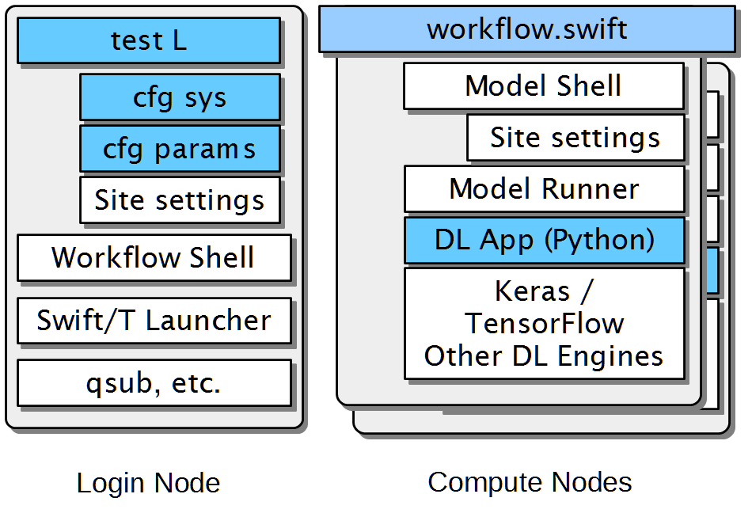

Overview of CANDLE/Supervisor¶
The CANDLE/Supervisor architecture is depicted in the figure below:
In the image, blue components are those to be heavily edited by users, where the white components will require little or no changes.
Supervisor executions starts with a Bash test script (shown as “test L”), these are intended to be rapidly copied, changed, and executed. These perform two basic actions: load settings from the cfg files, and run the workflow shell. Supervisor workflow examples include cases named “test-1” or “test-nightly” that are the simplest cases to run. These test scripts can override settings from the cfg files for quick tests. The command-line arguments to the test script include the site name and the experiment directory name to use for the run, these can be extended. The test script also specifies OBJ_RETURN, which is the value to be returned by the model run, typically “val_loss”, etc.
The cfg files are Bash scripts that configure the run with respect to the computing system (“sys”) or the numerical parameters (“prm”) of the run. This allows settings to be reused across tests. These can also be easily duplicated and modified. cfg-sys settings include QUEUE, WALLTIME, PROCS, and other basic compute job settings. cfg-prm settings are typically related to the optimizer for HPO or other numerical settings. For mlrMBO, these include MAX_ITERATIONS, etc., as well as the file location of a snippet of R code to be loaded by the optimizer.
The site settings are Bash scripts provided by Candle but can be modified or duplicated for new machines. These refer to env-SITE, sched-SITE, and langs-app-SITE files in Supervisor/workflows/common/sh . env-SITE configures the login node environment, sched-SITE configures the use of the system scheduler, and langs-app configures the environment to be used on the compute node (if Swift/T app functions are used). env-SITE typically sets up PATH, PYTHONPATH, etc., for Python, Tcl, R, Swift/T, etc. sched-SITE sets the Swift/T MACHINE variable so that Swift/T uses the right scheduler, and any other site-specific scheduler settings. langs-app-SITES typically sets PATH, PYTHONPATH, etc., for the compute node, which is commonly different from the settings for the login node.
The workflow shell script (workflow.sh) is a Bash script that loads the previously mentioned settings passes them to Swift/T. Some settings are passed as environment variables, some as command-line arguments, and so on. Other workflow-specific configuration may also be done here (setting up restarts, etc.).
The Swift/T launcher is part of Swift/T. This includes the Swift/T scheduler templates that are filtered and launched by Swift/T. See the Swift/T Sites Guide http://swift-lang.github.io/swift-t/sites.html for details.
Finally, qsub or equivalent is run by the Swift/T launcher scripts.
Swift/T runs as single multi-node MPI job, shown as workflow.swift . Swift/T logic encoded in workflow.swift proceeds until a Swift/T app function or python() launches execution. In Supervisor, this conventionally happens inside the function called obj(), which launches a CANDLE-compliant model run. obj() has multiple implementations for external forked execution (obj_app.swift), in-memory Python execution (obj_py.swift), and a debugging non-execution mode that reports the hyperparameters (obj_echo.swift).
External forked execution in Supervisor starts with a call to the Model Shell (model.sh) which redirects output to model.log, loads the langs-app-SITE settings described above, and runs the Model Runner in Python.
In-memory execution skips straight to the Model Runner without fork or the ability to perform shell configuration.
The Model Runner (model_runner.py) sets up and runs the model. It imports the required Python modules, processes the hyperparameters (formatted as JSON), and performs other optional configuration, and then runs the model via CANDLE-compliant interfaces. The return value is specified by the obj_return value.